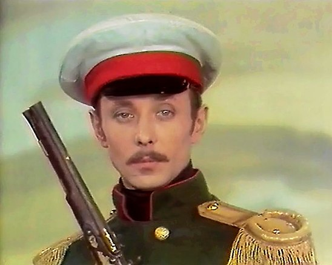

Даль, Олег Иванович
Оле́г Ива́нович Даль (25 мая 1941, Люблино, Московская область, РСФСР, СССР — 3 марта 1981, Киев, Украинская ССР, СССР) — советский актёр театра и кино. В 1963 году окончил Щепкинское театральное училище при Малом театре. В кино дебютировал в студенческие годы, сыграв Алика Крамера в фильме Александра Зархи «Мой младший брат». Среди киноролей Даля 1960-х годов — Женя Колышкин («Женя, Женечка и „катюша“»), Солдат и Кукольник («Старая, старая сказка»), Соболевский («Хроника пикирующего бомбардировщика»). В 1970-х годах фильмографию актёра пополнили Шут («Король Лир»), Лаевский («Плохой хороший человек»), Зилов («Отпуск в сентябре»), принц Флоризель («Клуб самоубийц, или Приключения титулованной особы») и другие персонажи. В 1987 году за роль Зилова Даль был посмертно удостоен специального приза Союза кинематографистов СССР на Всесоюзном фестивале телевизионных фильмов.
Значительная часть творческой биографии Даля связана с театром «Современник», куда актёр был принят после окончания Щепкинского училища. На сцене «Современника» Даль играл в разные годы Ваську Пепла («На дне»), Мужчину («Вкус черешни»), Камаева («Провинциальные анекдоты»), Балалайкина («Балалайкин и К°»), сэра Эндрю Эгьючика («Двенадцатая ночь». Работая в других театрах страны, артист воплотил на сцене образы Двойникова («Выбор», Ленинградский театр Ленинского комсомола), Беляева («Месяц в деревне», Театр на Малой Бронной). В последние месяцы жизни Даль репетировал в Малом театре роль Ежова (спектакль «Фома Гордеев»); до премьеры актёр не дожил.
Желание попробовать свои силы в режиссуре привело Даля в ноябре 1976 года на Высшие курсы сценаристов и режиссёров, откуда он был отчислен в 1977 году. С 23 октября 1980 года преподавал актёрское мастерство во ВГИКе. Даль скончался 3 марта 1981 года в киевской гостинице «Студийная» во время творческой командировки. Похоронен на Ваганьковском кладбище. Часть рукописного творческого архива Даля (дневники, стихи, письма, черновики сценариев) была опубликована после его смерти. В 2021 году на стене дома, где Даль жил в течение трёх последних лет (Смоленский бульвар, № 6—8), была установлена мемориальная доска.

Первого июля 1963 года решением государственной экзаменационной комиссии выпускнику Щепкинского училища Олегу Далю была присвоена квалификация «актёр драматического театра и кино». Тремя днями ранее, 29 июня, дирекция «Современника» обнародовала постановление общего собрания труппы, в котором указывалось, что Даль принят в штат театра-студии. Выходу этих документов предшествовали дипломные спектакли, на которых присутствовали представители московских театров, в том числе жена Олега Ефремова — актриса Алла Покровская. Именно она пригласила двоих выпускников «Щепки» — Виктора Павлова и Олега Даля — на показ в «Современник». Показ проходил в два тура, причём, согласно воспоминаниям Михаила Козакова, уже во время первого было понятно, что Даль («органичный, живой, темпераментный, пластичный») «идеально подходил эстетике» ефремовского театра.
Молодой перспективный артист, которому в театре дали прозвища Далёнок, Оленёнок и Олежек (его тёзку Ефремова звали по контрасту Олег Большой, а Табакова именовали Лёликом), официально был зачислен на работу 20 августа 1963 года, однако на протяжении нескольких сезонов серьёзных ролей ему не предлагали. Поначалу Даль был в основном занят в эпизодах или же вводился в спектакли во втором и третьем составах. Его взаимоотношения с театром складывались непросто, потому что в Дале, по словам киноведа Натальи Галаджевой, присутствовал «переизбыток внутренней свободы».
Так, однажды во время спектакля «Валентин и Валентина» Олег, исполнявший небольшую роль Саши Гусева, сел на край сцены и обратился к зрителям с просьбой «дать закурить». Несмотря на то, что для Даля подобная импровизация была просто способом общения с публикой, дирекция театра сочла этот экспромт отходом от запланированного действа и вынесла актёру выговор.
Кроме того, у артиста время от времени случались алкогольные срывы и немотивированные исчезновения, завершавшиеся проработкой на общих собраниях и «взятием на поруки». Ефремов периодически помещал его трудовую книжку в сейф, демонстрируя тем самым намерение уволить недисциплинированного артиста. Однако, по свидетельству Михаила Козакова, Даля в театре «любили и прощали»; обычно через полмесяца трудовая книжка Олега возвращалась в отдел кадров.
Первая встреча Даля с актрисой «Современника» Ниной Дорошиной произошла весной 1963 года, во время показа выпускников Щепкинского училища на сцене театра-студии. Во втором туре Далю досталась роль свинопаса Генриха из «Голого короля»; опытная артистка театра Дорошина («длинноногая, с тонкой талией, круглолицая») взялась подыграть дебютанту. Чуть позже Олег и Нина пересеклись на Одесской киностудии, где шли съёмки фильма «Первый троллейбус». Вернувшись, артисты сообщили труппе, что решили пожениться